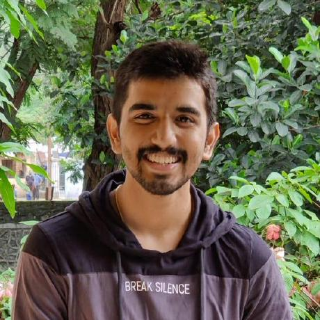
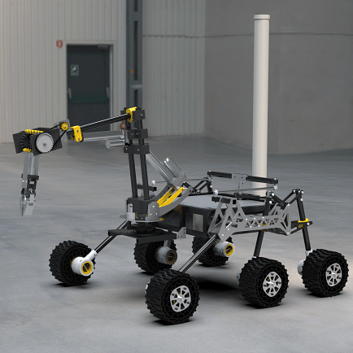
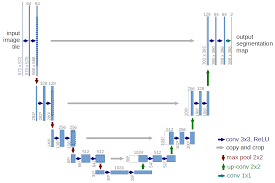
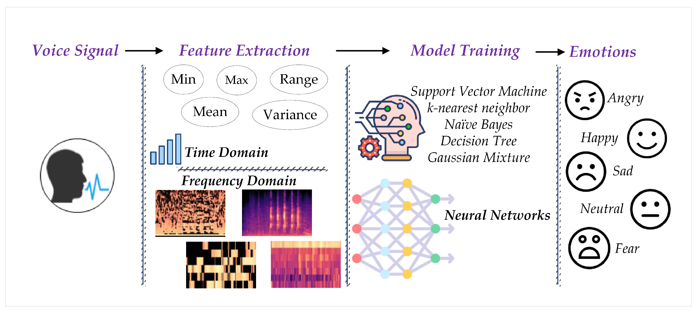

|  |
|
{kind=link}
|
I am a pre-final year undergraduate student at Birla Institute of Technology and Science Pilani where I'm pursuing my Bachelor's in Computer Science and Information Systems. My research interests include Deep Learning, Computer Vision, Full-Stack Web development. I am also open to exploring Computer Networks and Systems. I am currently working with Rajiv kumar Chaturvedi on enhacing the resolution of satellite data of precipitation using various GAN-based models such as Pix2Pix, SRGAN etc. I have interned at MASTH, Ultrahive Pvt Ltd where I worked on building a Machine Learning model for detection of emotion from speech. I created a Flask API for executing the model, facilitating integration with various applications. Additionally, I built a mock app using Flutter, demonstrating practical usage of the model in real-world scenarios. Additionally, I interned at Bajaj Electricals Ltd, where I designed and developed a web application which showcased real-time user-specific energy data through interactive charts, with Angular powering the front end, NodeJS managing the backend, and MongoDB handling the database. To ensure uninterrupted access, I deployed the application on AWS cloud services, guaranteeing high availability. Moreover, I established seamless connectivity between IoT devices and the cloud, facilitating regular data transmission at predefined intervals. This experience honed my skills in full-stack web development and cloud computing, while also providing practical insights into IoT integration and data management in real-world scenarios. Besides all this academic stuff, I like listening to music and playing sports. I play a lot of sports including Cricket, Football, Kabaddi and was also a part of University Kabaddi team. I also love playing Badminton and Table Tennis whenever I can. I also like reading books and am currently reading Dark Matter by Blake Crouch. I'm actively looking for research internships and internship opportunities. Feel free to check out my Resume or drop me an e-mail for a chat with me!
|
|
Jan '24 |
Went to Internation Rover Challenge '24, which was held in Coimbatore. Came 6th overall. |
|
Dec '23 |
Project Kratos released the 2024 SDDR for the Internation Rover Challenge '24. Watch it here! |
|
Aug '23 |
Completed Internship at Bajaj Electricals Ltd. |
|
July '23 |
Completed Internship at MASTH, Ultrahive Pvt Ltd. |
|
May '23 |
Selected as Life Detection Core Member at Project Kratos. Will be guiding the Life Detection Subsystem along with the lead. |
|
Mar '23 |
Project Kratos released the 2023 SAR for the University Rover Challenge '23 Watch it here! |
|
Jan '23 |
Went to Internation Rover Challenge '23, which was held in Bangalore. Bagged "Best Overall Rover" award. |
|
Sep '22 |
Joined Project Kratos as a Crew Member. |
|
Aug '22 |
Selected as PMP Mentor. Will be guiding Freshmen throughout their first year at college. |
|
Feb '22 |
Joined SEDS Celestia as a Crew Member. |
|
|
Jun '23 - Aug '23 Worked in the IoT team on developing and deploying a web application for Smart Energy Monitoring. |
|
|
May '23 - July '23 Worked on building and deploying an ML model which predicts the emotion from speech. |
|


|
Life Detection Core member
Developing a Mars rover as an interdisciplinary student-run team. We're responsible for the rover's life detection capabilities for the competitions University Rover Challenge and International Rover Challenge. Worked on developing a Deep Learning code for rock type identification. Additionally, crafted Arduino code for Atmospheric sensors such as Temprature and Pressure as well as various Gas sensors such as CO2, Methane etc. Also conducted chemical tests to identify soil proteins and other vital chemicals potentially indicating signs of life and optimized protocols for rover conditions. Spectral sensors were utilized to detect color changes during these tests, ensuring accurate analysis. |
|

|
Under Rajiv kumar Chaturvedi Worked on enhancing the resolution of satellite precipitation data using ground data, which had a better accuracy, to ensure better prediction of regional precipitation values. We initially developed a model based on empirical quantile mapping performed on interpolated data to correct the bias. Then we employed Generative Adversarial Networks based models such as Pix2Pix and SRGAN to identify correlation bewteen historical satellite and ground data thus ensuring better accuracy for future precipitation value predictions. |
|
|
Worked on developing a web application for visualising and analysing real-time user-specific energy data from smart meters. Leveraging Angular for the front end, NodeJS for the backend, and MongoDB for database management, I designed and developed a user-friendly platform that presented energy data through interactive charts. To ensure uninterrupted access and scalability, I deployed the application on AWS cloud services, guaranteeing high availability for users. Additionally, I established connectivity between IoT devices and the cloud, enabling regular data transmission at predefined intervals. |
|

|
Worked on identifying human emotions from speech using deep learning model. Designed and deployed the deep learning model onto a web application using Flask API. Additionally, built a mock application using Flutter to showcase model's practical applications in real-world scenarios. |
This template is a modification to Jon Barron's website. Find the source code to my website here.